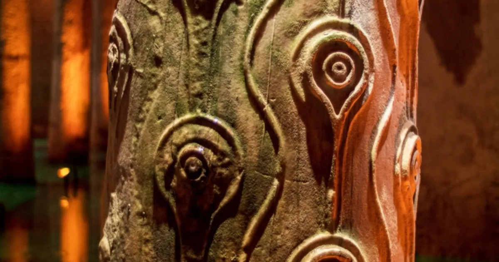

Everything To Know Before Visiting Hagia Sophia
Focused, practical guides built around real visitor questions: what to wear, when to go, what to see, how long it takes and how to book smarter.
Build your visit plan
Use the ticket finder, entrance map and route planner, then save a pocket guide for your phone.
Basilica Cistern planning guides
Many visitors combine Hagia Sophia with the underground Basilica Cistern on the same Sultanahmet route. Before choosing a ticket, review the Basilica Cistern ticket price 2026, check Basilica Cistern opening hours 2026, and use the Sultanahmet route guide to plan the order.

Things To Do Near Hagia Sophia
Blue Mosque, Basilica Cistern, Topkapi Palace, Sultanahmet Square and the best ticket routes for first-time visitors.

Hagia Sophia Dress Code (2026 Guide)
What should you wear when visiting Hagia Sophia? Complete dress code guide for men, women, and children.
Best Time To Visit Hagia Sophia
Discover the best time to visit Hagia Sophia with local advice on crowds, mornings, afternoons, Fridays, and busy travel periods.
Hagia Sophia vs Blue Mosque: Which Should You Visit?
Compare Hagia Sophia and the Blue Mosque, including highlights, timing, atmosphere, photos, and the best order to visit.

How Long Does Hagia Sophia Take?
Learn how much time you need for Hagia Sophia, from a quick visit to a detailed visit with the upper gallery.

Can You Visit Hagia Sophia For Free?
Learn which parts of Hagia Sophia are free for worship, what the paid upper-gallery ticket covers, current prices and child entry rules.

Hagia Sophia Upper Gallery Guide
Is the Hagia Sophia Upper Gallery worth it? Learn what you see, best photo spots, and local advice before your visit.

Hagia Sophia History Explained Simply
A simple guide to Hagia Sophia's history from Byzantine cathedral to Ottoman mosque, museum period, and today.
Visiting Hagia Sophia With Kids
A family-friendly guide to visiting Hagia Sophia with children, including timing, comfort tips, and nearby attractions.

Hagia Sophia Photography Guide
Find the best photography spots in and around Hagia Sophia, including exterior views, upper gallery angles, and best light.

Top Things To See Inside Hagia Sophia
A focused guide to the top things to see inside Hagia Sophia, from the dome and mosaics to Ottoman calligraphy and the Upper Gallery.
Hagia Sophia Mosaics Explained: History, Meaning & Visitor Guide
Discover the famous mosaics inside Hagia Sophia, learn their history, meaning, and why they remain among the most important works of Byzantine art.
Hagia Sophia Architecture: Why The Dome Changed History
Discover why Hagia Sophia's architecture is considered one of the greatest achievements in history. Learn about its dome, designers, engineering innovations, and lasting influence.
Hagia Sophia Friday Prayer Time & Tourist Access
Can tourists visit Hagia Sophia on Friday? Learn how prayer time affects access and when to go.
Hagia Sophia Ticket Office Queue: Where To Buy Tickets
Learn where to buy Hagia Sophia tickets, how the ticket-office queue works, what online tickets help with, and what security lines cannot be skipped.
Hagia Sophia From Galataport Cruise Port: Best Route
Arriving by cruise ship? Learn how to get from Galataport to Hagia Sophia, how much time to allow, and how to combine Sultanahmet attractions in one port day.
Hagia Sophia Opening Hours 2026: Best Time To Visit & Prayer Times
Planning a visit to Hagia Sophia? Discover current opening hours, prayer times, the best time to visit, how long to spend there, and tips to avoid crowds.

Basilica Cistern Ticket & Visitor Guide 2026
Compare official daytime prices with self-guided fast-track entry and a multilingual smartphone audio guide.

Basilica Cistern Opening Hours 2026
Plan around daytime and Night Shift entry hours, quieter visiting windows and last-entry timing.
Basilica Cistern vs Hagia Sophia
Compare history, tickets, visit time, crowds and the best same-day Sultanahmet route.

Is Basilica Cistern Worth It?
See who should visit, how long it takes and when the self-guided fast-track audio option makes sense.
Basilica Cistern Medusa Heads
Find both Medusa column bases, understand what is documented and what remains legend, and plan the best view inside the cistern.